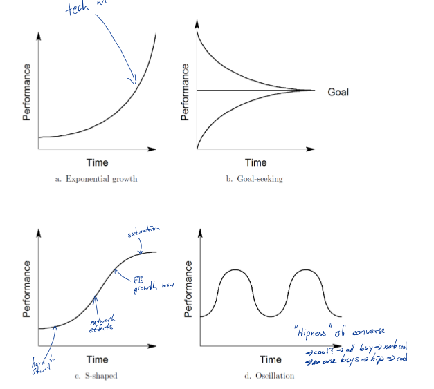
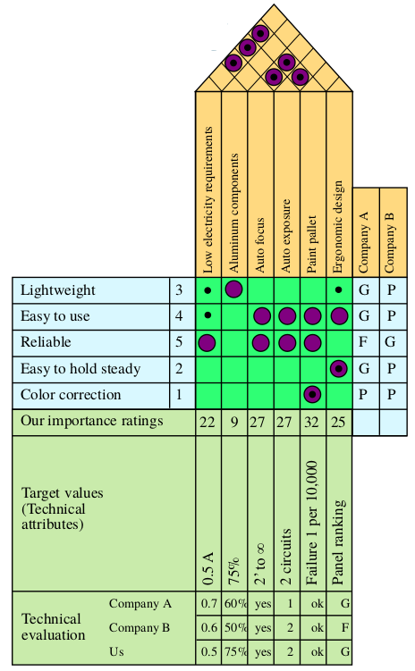
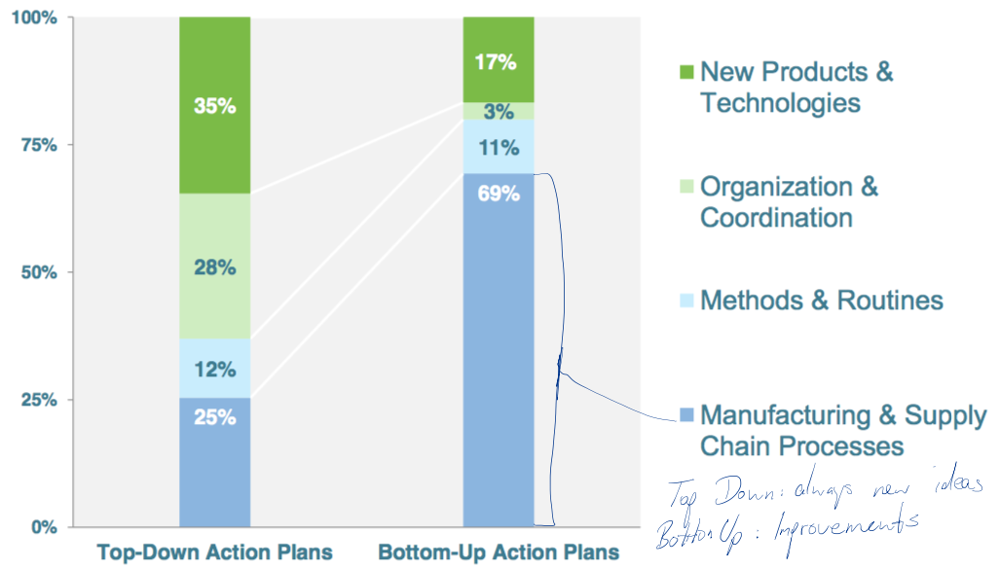

University of Cologne winter semester 2017/18
Pascal Brokmeier & Christian Hovestadt
To combine them, analysis has to be performed on supply network, operational and process levels.
| Lower cost | Differentiation | |
|---|---|---|
| Broad Target | Cost Leadership | Differentiation |
| Narrow Target | Cost Focus | Differentiation Focus |
Assumes, that operations excellence is not a source of competitive advantage
Understanding markets –> Strategic operations decisions
Understanding resources and processes –> Strategic operations decisions
–> Cost efficiency relies on other competitive priorities
System thinking is the process of…
System dynamics (developed in the 1950s at MIT) aims to to understand…
Causal loops can either be positively reinforcing or negatively reinforcing. Positive loops lead to an exponential growth unless some other external factor inhibits unlimited growth. Negative loops cause goal seeking behavior where the performances of elements converge towards some system specific equilibrium point.

Adding stocks to a system diagram allow for memory in the system and therefore different states over time. They also allow for non-constant rates of flow and therefore disequilibrium dynamics (bullwhip effects).
Find right balance between creative freedom and process discipline Idealized process structure visualized by management:
Idealized product development process: This is very similar to the waterfall model in SD and will therefore by not included in detail in this summary.
Maturity stages of the NPD Process
The following 4 components are combined in the aforementioned Aggregate product plan:
Def: Disruption [Christensen]
1. New product/service with a different set of performance attributes
2. Underperforming on attributes of ‘old’ product that mainstream customers value
3. High improvement potential
Def: Product Architecture
The arrangement of physical elements into chunks which become the building blocks for the product or family of products
Def: Risk Management is the art and science of identifying and responding to project risk throughout the life of a project and in the best interests of its objectives.
A simple tool to assess risks by assining an expected revenue to each possible outcome and probabilities to each event. Decisions are represented as boxes, events as circles.
It is argued based on percent numbers of unsucessful projects overall regarding new products. IT mostly over budget, construction is mostly late, automative seems to be doing alright. Clearly, a strong case of the planning falacy and sunk cost falacy.

This model is especially interesting as it applies the HoQ model to the different stages. Hence for each stage, the wants of the customer are the “hows” of the previous stage:
The Stage Gate model includes the idea of having systematic positions or stages in a process where it is expected of to regularly scrap projects that do not manage to pass certain quality or performance criteria (Go/Kill decisions). The decisions are made by a team of gatekeepers from management, who are resource owners, but are not as involved as the project managers. This really is common sense but it is required as humans tend to be biased towards wanting to do too much (project falacy) and feel the need to pull through with rationally failed projects (sunk cost falacy, confirmation bias, …)
The simulation was very similar to the second paper of chapter 9, which looks at how to balance near and offshore manufacturing. However, the paper defined correlation between supply and demand. In the simulation, the supply was not fluctuating but fixed and reliable.
The topic of this chapter is the process of deciding the long term requirements for capacity sizes as well as time and location. While the scope is “long term”, the decision process for the size is very similar to that of the newsvendor problem. One has to evaluate both the costs that one incurrs in the case of an investment into new capacity and the expected benefits (income) one might get in return. This is abstracted by an expected demand distribution. The timing tradeoff is that of gitadditional demand distribution information (i.e. a smaller standard deviation) vs. the risk of lost sales opportunities while waiting. The location tradeoff is that of costs versus a service level fulfillment ability. The closer the manufacturing is, the easier it is to fulfill all demand, achieving a high service level.
Def: Capacity in the static, physical sense, means the scale of an operation
Key determinants of capacity strategy include:
Capacity frictions:

Principle 1: Always include in forecast derivation process
Principle 2: Always include uncertainty by time bucket
Consensus based forecasting is the idea of asking several specialists for their opinion and let them come up with a number that everyone can agree on. This is dangerous, as it allows for human dynamics to nudge the number to something that does not resemble the actual statistical average of all individual estimates. Hence, it looses detail and information value.
Scale economies allow for reduced marginal cost with increasing total number of items produced. This may not only be due to the spreading of fixed cost but also from bulk orders leading to material cost reduction, learning processes, efficiency improvements etc.
Tools of the trade for Risk analysis: - Scenario analysis: worst, expected, best case 1. Determine Factors 2. Determine Scenarios 3. Assign probabilities 4. Estimate Cash Flow for each 5. Compute expected NPV - Decision Tree & Real Option Analysis: sequential decisions, discrete results - Incorporates decisions in comparison to scenario analysis which expects a certain end result and then weighs the value of each. - Simulation: complex computational models which are part of another lecture

The question of when one adapts the capacity. This always includes a certain lag for the upgrade process during which demand can fluctuate. The larger the lag the greater the risk.
| Advantages of Leading | Advantages of Lagging |
|---|---|
| real option: can increase capacity, but no obligation | real option: wait and see |
| ensuring every possible sale can be met | Only answering sure demand, avoiding high fixed costs |
| Capacity for adaptive ramp-up in new factories, allows reduction of load on older factories |
A hybrid of leading and lagging would achieve a mix of both worlds: One builds up stocks until the demand passes the capacity. Now the stocks get used to satisfy demand. However, a new capacity increase is already in planning and will soon complete, allowing for additional capacity to be added soon.
??? Slide 40 TODO

There is a tradeoff point: the higher the service level of a company is set to be, the lower is the cost saving when using offshoring. At some point, it is more logical to use local sources, as shipping and safety stock costs negate all savings of the individual COGS.
Sharing the risk by aggregating supply/demand locations and pooling the customer demand. Let’s assume:
The differences in demand for separate regions require them to stock much more than they would need if they shared their safety stock pool. However, there are two disadvantages:
So overall it can be said that in a market where: Individual shipping costs surcharges are low and response time is not elementary, centralized warehouses are rational. This can be seen with car dealers. Yes, they have cars on stock but mainly for demonstration purposes. A Toyota dealer doesn’t however store 10 identical models for customers to walk in and buy one.
Correlation Coefficients
\[ p = \frac{\text{covariance}}{\sigma_1\sigma_2} = \frac{E[(D_1-\mu_1)(D_2-\mu_2)]}{\sigma_1\sigma_2} \]
Now this obviously leads to covariance in between locations and, if demand is correlated, this needs to be taken into account. Statistics 101 so to speak.
\[ \sigma_{pool} = \sqrt{\sigma^2_1 + 2p\sigma_1\sigma_2 + \sigma^2_2} \le \sigma_1 + \sigma_2 \]
How effective is the pool? Well it depends on the correlation factor. if correlation is at -1 then it has the craziest effect as every missed sale is an additional sale somewhere else and the pool buffers this. A +1 correlation leads to no benefit at all.
\[ \text{effectiveness} = 1 - \frac{\sigma_{pool}}{\sigma_1 + \sigma_2}\]

It is nice to see that all we need to do for this course is understand: Newsvendor model, service level and covariance.
This is of course obvious to a rational person. The question is however, how much does the Flexibility improvements cost the company? A $ 2 Mio. costly ERP system doesn’t benefit a shopkeep that owns 4 pasta shops. So the ahead of time investment cost for such a flexibility increasing setup always needs to be weighed against the expected savings.
TODO: Chaining
Total cost of ownership (TCO)
–> Reduce inventory not only to cut cost, but also to reveal the operation’s problems
Produce the required items, at the required time, in the required quantity - Zero defects - Zero inventories - Zero set-up time - Zero lead time - Zero parts Handling - Zero breakdown - Batch size of one
Def: Mass Customization
The customization of products or services for a mass market of customers, with near mass production efficiency through flexible and responsive pull-processes
The point at which the push-processes are decoupled from the pull-processes - Before CODP: Production based on estimated demand - After CODP: Production based on customer demand
Studies indicate more customization options are not always better since customers may be overwhelmed by the choice
The paper discusses the chances and challenges of additive manufacturing for the global markets as well as for the economy of the US as a nation. It’s a predictive article, meaning it’s based on hypothesis and theories without proof but on educated guesses.
One major assumption the author makes and bases his arguments on is the assumption that AM is not suffering from scale economies or rather the lack of them due to low numbers of production. He argues that this leads to massive changes in the supply chains of most products and will affect everyone quiet strongly.
I argue that he does not once reason why the AM will not suffer from economies of scale. Some reasons why it should also suffer from EOS:
The author partially argues against these points in later paragraphs. The arguments are partially valid but without any funding proof. The first point he also notes, the second one he argues is less relevant, as AM firms can buy base materials for all sorts of products instead of having to buy individual distinct items. Hence, they have EOS by being able to purchase in bulk for several different products. This however assumes other firms cannot buy at one supplier and get discounts even though they order “10% of everything”. It also assumes that competitors do not also produce from raw materials. If we were to talk e.g. about different bolts, screws and hinges, the TM manufacturers also produce these from raw materials and hence also purchase just one material in bulk.
The author also argues that learning and experience is less relevant for AM firms. I disagree, as the technology certainly hasn’t become simpler and hence, a highly skill workforce is still required. Also, AM firms don’t really compete with classic, mainly human based manufacturing but with highly automated processing plants. Hence, they compete with robotic assembly lines.
A tradeoff curve would be required for all these to see the actual differences in EOS. This probably requires repeated empiricical data.
Assuming small firms can adequately compete with large firms through the deployment of AM, the author makes an interesting point. He introduces a tradeoff between organzational costs and economies of scale.
While the author introduces the idea of large firms adopting AM and then moving towards many small franchised firms close to the customer, the inherent conclusion still is that there needs to be a global network of raw material deliveries. The concept of the “platform economy” therefore goes hand in hand with the idea of many small companies as some platform is required to integrate their economic interactions.
basically, it’s the modularisation of strategy from abstract to concrete: Translate targets into actions which become targets on lower levels again

Generally, this chapter is just all about high level vs. low level strategy reach, the span between abstract goals and detailed performance measures at the operational level.
This section is related to a paper by Prof. Sting (yet another one, quiet the printing press this guy). Analysed were a few companies with ˜100 action plans. The following stats will paint the picture

How do you get from a current state to an improved state? Overall concepts of learning as a company.

Learning curve: \(c(x) = c_0 \times x^{-\alpha}\)
Learning rate L: \(L = 2^{-\alpha}\)
An interesting fact about learning effects is the ability to extrapolate the global improvements of technologies. While we cannot say how we manage to have 400x faster CPUs in X years, we can say with reasonable certainty, that we will have them.
There was no regular lecture in session 13, as the group assignments have been presented.
Def: A benchmark is an organization, process or product that is exemplary.
Def: Benchmarking is the process that enables companies to define gaps in their performance and practices.
The End :)